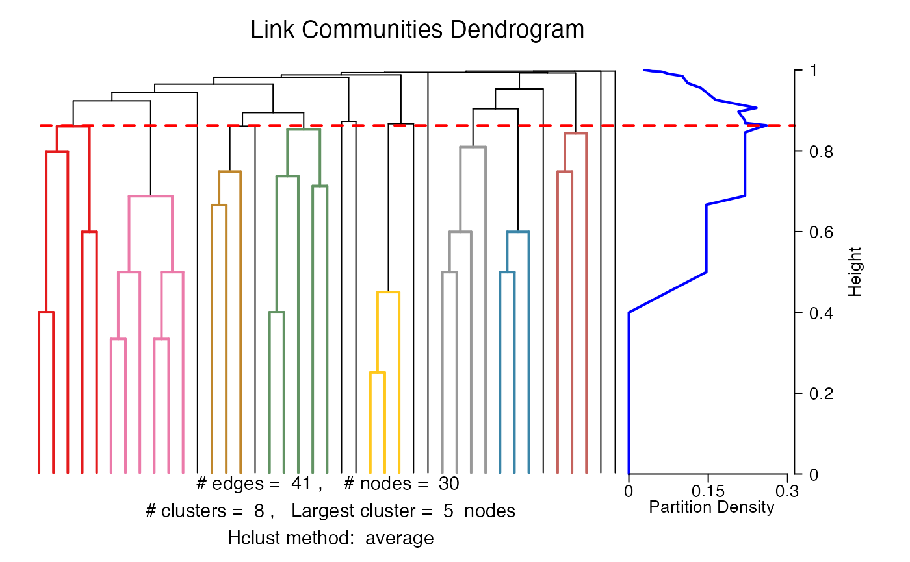
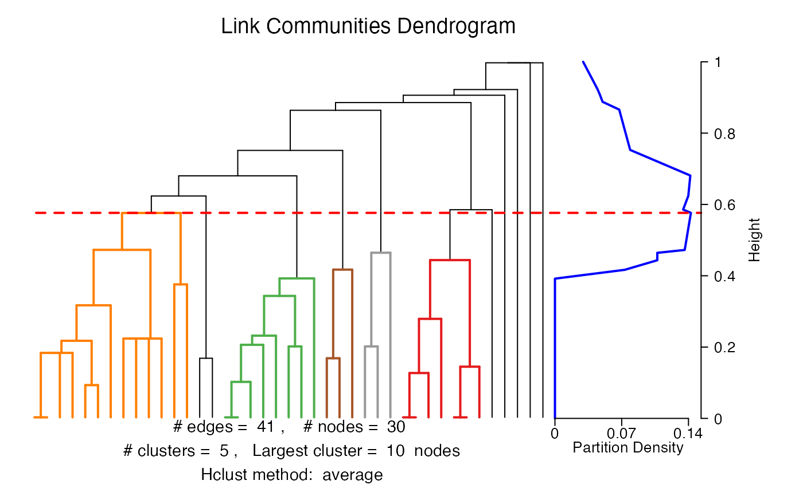

getLinkCommunities.RdThis function extracts link communities from networks of arbitrary size and type.
getLinkCommunities(network, hcmethod = "average", use.all.edges = FALSE, edglim = 10^4, directed = FALSE, dirweight = 0.5, bipartite = FALSE, dist = NULL, plot = TRUE, check.duplicates = TRUE, removetrivial = TRUE, verbose = TRUE)
| network | An edge list, which is a matrix or data frame with 2 or 3 columns. The first 2 columns contain the nodes that interact with each other, which can be character strings or integer values. The optional third column is a numerical vector of weights for each edge. Can also be a character string naming a file containing an edge list. |
|---|---|
| hcmethod | A character string naming the hierarchical clustering method to use. Can be one of |
| use.all.edges | Logical, indicating whether edge similarities should be calculated for all pairs of edges (TRUE), or only for edge pairs that share a node (FALSE) as in the original Ahn et al. (2010) algorithm. Defaults to FALSE. If TRUE, networks are treated as undirected. |
| edglim | An integer value indicating the largest number of edges permissible for the hierarchical clustering to be handled in memory. Above this value the upper triangular dissimilarity matrix will be written to disk and read and written as clustering proceeds until the file size is 0 bytes (see Details below). Defaults to \(10^{4}\). |
| directed | Logical, whether the network is directed. Defaults to FALSE. |
| dirweight | A numerical value between 1 and 0 inclusive indicating the weight that will be attached to edges that share a node but are in the opposite orientation. Defaults to 0.5. Will be ignored if |
| bipartite | Logical, whether the input network is bi-partite. See Details for an explanation of how bi-partite networks are handled. Defaults to FALSE. |
| dist | An object of class |
| plot | Logical, whether to plot summary output from the algorithm (dendrogram and partition density plot). Defaults to TRUE. Note, if there are more than 1500 but less than edglim edges then the dendrogram will be plotted without colour and in a separate panel from the partition density to avoid lengthy rendering times; when there are more than edglim edges then only the partition density will be plotted. |
| check.duplicates | Logical, whether to check for and remove loops, duplicate edges, and bi-directional edges. Defaults to TRUE. Note, if you wish to avoid this step by setting this parameter to FALSE then you must be certain that there are no duplicate edges in the network. |
| removetrivial | Logical, whether to remove trivial community clusters that contain 2 edges. Defaults to TRUE. |
| verbose | Logical, whether to display the progress of the algorithm on the screen. Defaults to TRUE. |
This is the main algorithm used for extracting link communities from networks of arbitrary size and type. Input networks may be directed, weighted, both directed and weighted, or neither. The algorithm used is the one outlined by Ahn et al. (2010). The similarity between links, \(e_{ik}\) and \(e_{jk}\), that share a node, \(k\), is calculated using the Jaccard coefficient
$$S(e_{ik},e_{jk})=\frac{|n_{+}(i)\cap n_{+}(j)|}{|n_{+}(i)\cup n_{+}(j)|}$$
where \(n_{+}(i)\) refers to the first-order node neighbourhood of node \(i\), which includes node \(i\) itself (inclusive neighbour set). After assigning pairwise similarities to all of the links in the network, the links are hierarchically clustered using single-linkage clustering, and the resulting dendrogram is cut at a point that maximises the density of links within the clusters normalising against the maximum and minimum numbers of links possible in each cluster, known as the partition density.
For directed and weighted networks, the Tanimoto coefficient is used for assigning similarity between links
$$S(e_{ik},e_{jk})=\frac{\mathbf{a}_{i}.\mathbf{a}_{j}}{|\mathbf{a}_{i}|^{2}+|\mathbf{a}_{j}|^{2}-\mathbf{a}_{i}.\mathbf{a}_{j}}$$
where \(\mathbf{a}_{i}\) refers to a vector describing the weights of links between node \(i\) and the nodes in the first-order neighbourhoods of both nodes \(i\) and \(j\) (equal to 0 in the event of an absent link). For directed networks, links to nodes shared by both node \(i\) and \(j\) are given a user-defined weight below 1 if they are in the opposite orientation.
For bi-partite networks, the set of neighbours (instead of the inclusive neighbour set) is used to count nodes for the edge similarity metric because node \(i\) and node \(j\) cannot share an edge in a bi-partite network. The partition density for bi-partite networks is calculated as:
$$D_{c} = \frac{2}{M}\sum_{c}m_{c}\frac{m_{c}+1-n_{c}}{2n_{c0}n_{c1}-2(n_{c}-1)}$$
where \(M\) is the total number of edges, \(m_c\) is the number of edges in subset \(c\), \(n_c\) is the number of nodes in subset \(c\), \(n_{c0}\) is the number of nodes in partition 0, and \(n_{c1}\) is the number of nodes in partition 1.
An object of class linkcomm, which is a list containing the following components:
An integer vector with the number of edges, nodes, and communities.
An object of class hclust, which contains information about the hierarchical clustering of links.
A numerical value indicating the height of the dendrogram at which the partition density is maximised.
A numerical matrix with 2 columns; the first is the heights at which clusters appear and the second is the partition density.
A data frame consisting of 2 columns; the first contains node names, and the second contains single community IDs for each node. All communities and their nodes are represented, but not necessarily all nodes.
A list of integer vectors containing the link IDs that belong to each community. Community IDs are the numerical position of the communities in the list.
A data frame with 3 columns; the first two contain nodes that interact with each other, and the third is an integer vector of community IDs indicating community membership for each link.
A named integer vector. Names are node names and integer values are the number of communities to which each node belongs.
A named integer vector. Names are community IDs and integer values indicate the number of nodes that belong in each community.
An object of class igraph. The network is represented here as an igraph object.
A character matrix with 2 columns containing the nodes that interact with each other.
Logical indicating whether the network is directed.
Logical indicating whether the network is bi-partite.
Ahn, Y.Y., Bagrow, J.P., and Lehmann, S. (2010). Link communities reveal multiscale complexity in networks. Nature 466, 761-764.
Kalinka, A.T. and Tomancak, P. (2011). linkcomm: an R package for the generation, visualization, and analysis of link communities in networks of arbitrary size and type. Bioinformatics 27, 2011-2012.
Alex T. Kalinka alex.t.kalinka@gmail.com
When the number of links is less than edglim the hierarchical clustering will be handled in memory. Above this value the upper triangular dissimilarity matrix will be compressed and written to disk and read and written as clustering proceeds until the file size is 0 bytes using a compiled C++ function. In this case the hierarchical clustering method will always be "single" to enhance performance for large networks. The size of edglim can be modified to suit the computer resources available to the user. As a guide, a network with \(10^{4}\) links will require \(((10^{4})^{2})*8 = 800\) MB to be handled in an uncompressed format in the memory.
For directed networks, a pair of bidirectional interactions between two nodes cannot be assigned similarities and the edge that appears lower in the edge list for the network will be discarded.
When use.all.edges is TRUE, the algorithm may be slow as all pairs of edges will be compared (\(n^2\) comparisons, where \(n\) is the number of edges).
## Generate graph and extract link communities. g <- swiss[,3:4] lc <- getLinkCommunities(g)#> Checking for loops and duplicate edges... 0.000% Checking for loops and duplicate edges... 2.174% Checking for loops and duplicate edges... 4.348% Checking for loops and duplicate edges... 6.522% Checking for loops and duplicate edges... 8.696% Checking for loops and duplicate edges... 10.870% Checking for loops and duplicate edges... 13.043% Checking for loops and duplicate edges... 15.217% Checking for loops and duplicate edges... 17.391% Checking for loops and duplicate edges... 19.565% Checking for loops and duplicate edges... 21.739% Checking for loops and duplicate edges... 23.913% Checking for loops and duplicate edges... 26.087% Checking for loops and duplicate edges... 28.261% Checking for loops and duplicate edges... 30.435% Checking for loops and duplicate edges... 32.609% Checking for loops and duplicate edges... 34.783% Checking for loops and duplicate edges... 36.957% Checking for loops and duplicate edges... 39.130% Checking for loops and duplicate edges... 41.304% Checking for loops and duplicate edges... 43.478% Checking for loops and duplicate edges... 45.652% Checking for loops and duplicate edges... 47.826% Checking for loops and duplicate edges... 50.000% Checking for loops and duplicate edges... 52.174% Checking for loops and duplicate edges... 54.348% Checking for loops and duplicate edges... 56.522% Checking for loops and duplicate edges... 58.696% Checking for loops and duplicate edges... 60.870% Checking for loops and duplicate edges... 63.043% Checking for loops and duplicate edges... 65.217% Checking for loops and duplicate edges... 67.391% Checking for loops and duplicate edges... 69.565% Checking for loops and duplicate edges... 71.739% Checking for loops and duplicate edges... 73.913% Checking for loops and duplicate edges... 76.087% Checking for loops and duplicate edges... 78.261% Checking for loops and duplicate edges... 80.435% Checking for loops and duplicate edges... 82.609% Checking for loops and duplicate edges... 84.783% Checking for loops and duplicate edges... 86.957% Checking for loops and duplicate edges... 89.130% Checking for loops and duplicate edges... 91.304% Checking for loops and duplicate edges... 93.478% Checking for loops and duplicate edges... 95.652% Checking for loops and duplicate edges... 97.826% Checking for loops and duplicate edges... 100.000% #> Found and removed 4 loop(s) #> Found and removed 2 duplicate edge(s) #> Calculating edge similarities for 41 edges... 0.00% Calculating edge similarities for 41 edges... 2.56% Calculating edge similarities for 41 edges... 5.13% Calculating edge similarities for 41 edges... 7.69% Calculating edge similarities for 41 edges... 10.26% Calculating edge similarities for 41 edges... 12.82% Calculating edge similarities for 41 edges... 15.38% Calculating edge similarities for 41 edges... 17.95% Calculating edge similarities for 41 edges... 20.51% Calculating edge similarities for 41 edges... 23.08% Calculating edge similarities for 41 edges... 25.64% Calculating edge similarities for 41 edges... 28.21% Calculating edge similarities for 41 edges... 30.77% Calculating edge similarities for 41 edges... 33.33% Calculating edge similarities for 41 edges... 35.90% Calculating edge similarities for 41 edges... 38.46% Calculating edge similarities for 41 edges... 41.03% Calculating edge similarities for 41 edges... 43.59% Calculating edge similarities for 41 edges... 46.15% Calculating edge similarities for 41 edges... 48.72% Calculating edge similarities for 41 edges... 51.28% Calculating edge similarities for 41 edges... 53.85% Calculating edge similarities for 41 edges... 56.41% Calculating edge similarities for 41 edges... 58.97% Calculating edge similarities for 41 edges... 61.54% Calculating edge similarities for 41 edges... 64.10% Calculating edge similarities for 41 edges... 66.67% Calculating edge similarities for 41 edges... 69.23% Calculating edge similarities for 41 edges... 71.79% Calculating edge similarities for 41 edges... 74.36% Calculating edge similarities for 41 edges... 76.92% Calculating edge similarities for 41 edges... 79.49% Calculating edge similarities for 41 edges... 82.05% Calculating edge similarities for 41 edges... 84.62% Calculating edge similarities for 41 edges... 87.18% Calculating edge similarities for 41 edges... 89.74% Calculating edge similarities for 41 edges... 92.31% Calculating edge similarities for 41 edges... 94.87% Calculating edge similarities for 41 edges... 97.44% Calculating edge similarities for 41 edges... 100.00% #> Hierarchical clustering of edges... #> Calculating link densities... 0.00% Calculating link densities... 2.56% Calculating link densities... 5.13% Calculating link densities... 7.69% Calculating link densities... 10.26% Calculating link densities... 12.82% Calculating link densities... 15.38% Calculating link densities... 17.95% Calculating link densities... 20.51% Calculating link densities... 23.08% Calculating link densities... 25.64% Calculating link densities... 28.21% Calculating link densities... 30.77% Calculating link densities... 33.33% Calculating link densities... 35.90% Calculating link densities... 38.46% Calculating link densities... 41.03% Calculating link densities... 43.59% Calculating link densities... 46.15% Calculating link densities... 48.72% Calculating link densities... 51.28% Calculating link densities... 53.85% Calculating link densities... 56.41% Calculating link densities... 58.97% Calculating link densities... 61.54% Calculating link densities... 64.10% Calculating link densities... 66.67% Calculating link densities... 69.23% Calculating link densities... 71.79% Calculating link densities... 74.36% Calculating link densities... 76.92% Calculating link densities... 79.49% Calculating link densities... 82.05% Calculating link densities... 84.62% Calculating link densities... 87.18% Calculating link densities... 89.74% Calculating link densities... 92.31% Calculating link densities... 94.87% Calculating link densities... 97.44% Calculating link densities... 100.00% #> Maximum partition density = 0.2601626 #> Finishing up...1/4... 12% Finishing up...1/4... 25% Finishing up...1/4... 37% Finishing up...1/4... 50% Finishing up...1/4... 62% Finishing up...1/4... 75% Finishing up...1/4... 87% Finishing up...1/4... 100% Finishing up...2/4... 12% Finishing up...2/4... 25% Finishing up...2/4... 37% Finishing up...2/4... 50% Finishing up...2/4... 62% Finishing up...2/4... 75% Finishing up...2/4... 87% Finishing up...2/4... 100% Finishing up...3/4... 12% Finishing up...3/4... 25% Finishing up...3/4... 37% Finishing up...3/4... 50% Finishing up...3/4... 62% Finishing up...3/4... 75% Finishing up...3/4... 87% Finishing up...3/4... 100% Finishing up...4/4... 0.00% Finishing up...4/4... 4.76% Finishing up...4/4... 9.52% Finishing up...4/4... 14.29% Finishing up...4/4... 19.05% Finishing up...4/4... 23.81% Finishing up...4/4... 28.57% Finishing up...4/4... 33.33% Finishing up...4/4... 38.10% Finishing up...4/4... 42.86% Finishing up...4/4... 47.62% Finishing up...4/4... 52.38% Finishing up...4/4... 57.14% Finishing up...4/4... 61.90% Finishing up...4/4... 66.67% Finishing up...4/4... 71.43% Finishing up...4/4... 76.19% Finishing up...4/4... 80.95% Finishing up...4/4... 85.71% Finishing up...4/4... 90.48% Finishing up...4/4... 95.24% Finishing up...4/4... 100.00% #> Plotting... #> Colouring dendrogram... 1% Colouring dendrogram... 2% Colouring dendrogram... 3% Colouring dendrogram... 4% Colouring dendrogram... 6% Colouring dendrogram... 7% Colouring dendrogram... 8% Colouring dendrogram... 9% Colouring dendrogram... 11% Colouring dendrogram... 12% Colouring dendrogram... 13% Colouring dendrogram... 14% Colouring dendrogram... 16% Colouring dendrogram... 17% Colouring dendrogram... 18% Colouring dendrogram... 19% Colouring dendrogram... 20% Colouring dendrogram... 22% Colouring dendrogram... 23% Colouring dendrogram... 24% Colouring dendrogram... 25% Colouring dendrogram... 27% Colouring dendrogram... 28% Colouring dendrogram... 29% Colouring dendrogram... 30% Colouring dendrogram... 32% Colouring dendrogram... 33% Colouring dendrogram... 34% Colouring dendrogram... 35% Colouring dendrogram... 37% Colouring dendrogram... 38% Colouring dendrogram... 39% Colouring dendrogram... 40% Colouring dendrogram... 41% Colouring dendrogram... 43% Colouring dendrogram... 44% Colouring dendrogram... 45% Colouring dendrogram... 46% Colouring dendrogram... 48% Colouring dendrogram... 49% Colouring dendrogram... 50% Colouring dendrogram... 51% Colouring dendrogram... 53% Colouring dendrogram... 54% Colouring dendrogram... 55% Colouring dendrogram... 56% Colouring dendrogram... 58% Colouring dendrogram... 59% Colouring dendrogram... 60% Colouring dendrogram... 61% Colouring dendrogram... 62% Colouring dendrogram... 64% Colouring dendrogram... 65% Colouring dendrogram... 66% Colouring dendrogram... 67% Colouring dendrogram... 69% Colouring dendrogram... 70% Colouring dendrogram... 71% Colouring dendrogram... 72% Colouring dendrogram... 74% Colouring dendrogram... 75% Colouring dendrogram... 76% Colouring dendrogram... 77% Colouring dendrogram... 79% Colouring dendrogram... 80% Colouring dendrogram... 81% Colouring dendrogram... 82% Colouring dendrogram... 83% Colouring dendrogram... 85% Colouring dendrogram... 86% Colouring dendrogram... 87% Colouring dendrogram... 88% Colouring dendrogram... 90% Colouring dendrogram... 91% Colouring dendrogram... 92% Colouring dendrogram... 93% Colouring dendrogram... 95% Colouring dendrogram... 96% Colouring dendrogram... 97% Colouring dendrogram... 98% Colouring dendrogram... 100%## Extract communities by writing a temporary file to disk. lc <- getLinkCommunities(g, edglim = 10)#> Checking for loops and duplicate edges... 0.000% Checking for loops and duplicate edges... 2.174% Checking for loops and duplicate edges... 4.348% Checking for loops and duplicate edges... 6.522% Checking for loops and duplicate edges... 8.696% Checking for loops and duplicate edges... 10.870% Checking for loops and duplicate edges... 13.043% Checking for loops and duplicate edges... 15.217% Checking for loops and duplicate edges... 17.391% Checking for loops and duplicate edges... 19.565% Checking for loops and duplicate edges... 21.739% Checking for loops and duplicate edges... 23.913% Checking for loops and duplicate edges... 26.087% Checking for loops and duplicate edges... 28.261% Checking for loops and duplicate edges... 30.435% Checking for loops and duplicate edges... 32.609% Checking for loops and duplicate edges... 34.783% Checking for loops and duplicate edges... 36.957% Checking for loops and duplicate edges... 39.130% Checking for loops and duplicate edges... 41.304% Checking for loops and duplicate edges... 43.478% Checking for loops and duplicate edges... 45.652% Checking for loops and duplicate edges... 47.826% Checking for loops and duplicate edges... 50.000% Checking for loops and duplicate edges... 52.174% Checking for loops and duplicate edges... 54.348% Checking for loops and duplicate edges... 56.522% Checking for loops and duplicate edges... 58.696% Checking for loops and duplicate edges... 60.870% Checking for loops and duplicate edges... 63.043% Checking for loops and duplicate edges... 65.217% Checking for loops and duplicate edges... 67.391% Checking for loops and duplicate edges... 69.565% Checking for loops and duplicate edges... 71.739% Checking for loops and duplicate edges... 73.913% Checking for loops and duplicate edges... 76.087% Checking for loops and duplicate edges... 78.261% Checking for loops and duplicate edges... 80.435% Checking for loops and duplicate edges... 82.609% Checking for loops and duplicate edges... 84.783% Checking for loops and duplicate edges... 86.957% Checking for loops and duplicate edges... 89.130% Checking for loops and duplicate edges... 91.304% Checking for loops and duplicate edges... 93.478% Checking for loops and duplicate edges... 95.652% Checking for loops and duplicate edges... 97.826% Checking for loops and duplicate edges... 100.000% #> Found and removed 4 loop(s) #> Found and removed 2 duplicate edge(s) #> Calculating edge similarities for 41 edges... 0.00% Calculating edge similarities for 41 edges... 2.56% Calculating edge similarities for 41 edges... 5.13% Calculating edge similarities for 41 edges... 7.69% Calculating edge similarities for 41 edges... 10.26% Calculating edge similarities for 41 edges... 12.82% Calculating edge similarities for 41 edges... 15.38% Calculating edge similarities for 41 edges... 17.95% Calculating edge similarities for 41 edges... 20.51% Calculating edge similarities for 41 edges... 23.08% Calculating edge similarities for 41 edges... 25.64% Calculating edge similarities for 41 edges... 28.21% Calculating edge similarities for 41 edges... 30.77% Calculating edge similarities for 41 edges... 33.33% Calculating edge similarities for 41 edges... 35.90% Calculating edge similarities for 41 edges... 38.46% Calculating edge similarities for 41 edges... 41.03% Calculating edge similarities for 41 edges... 43.59% Calculating edge similarities for 41 edges... 46.15% Calculating edge similarities for 41 edges... 48.72% Calculating edge similarities for 41 edges... 51.28% Calculating edge similarities for 41 edges... 53.85% Calculating edge similarities for 41 edges... 56.41% Calculating edge similarities for 41 edges... 58.97% Calculating edge similarities for 41 edges... 61.54% Calculating edge similarities for 41 edges... 64.10% Calculating edge similarities for 41 edges... 66.67% Calculating edge similarities for 41 edges... 69.23% Calculating edge similarities for 41 edges... 71.79% Calculating edge similarities for 41 edges... 74.36% Calculating edge similarities for 41 edges... 76.92% Calculating edge similarities for 41 edges... 79.49% Calculating edge similarities for 41 edges... 82.05% Calculating edge similarities for 41 edges... 84.62% Calculating edge similarities for 41 edges... 87.18% Calculating edge similarities for 41 edges... 89.74% Calculating edge similarities for 41 edges... 92.31% Calculating edge similarities for 41 edges... 94.87% Calculating edge similarities for 41 edges... 97.44% Calculating edge similarities for 41 edges... 100.00% #> Hierarchical clustering of edges... 0.00% Hierarchical clustering of edges... 2.56% Hierarchical clustering of edges... 7.69% Hierarchical clustering of edges... 17.95% Hierarchical clustering of edges... 25.64% Hierarchical clustering of edges... 28.21% Hierarchical clustering of edges... 38.46% Hierarchical clustering of edges... 43.59% Hierarchical clustering of edges... 46.15% Hierarchical clustering of edges... 51.28% Hierarchical clustering of edges... 53.85% Hierarchical clustering of edges... 56.41% Hierarchical clustering of edges... 58.97% Hierarchical clustering of edges... 66.67% Hierarchical clustering of edges... 71.79% Hierarchical clustering of edges... 74.36% Hierarchical clustering of edges... 82.05% Hierarchical clustering of edges... 84.62% Hierarchical clustering of edges... 87.18% Hierarchical clustering of edges... 89.74% Hierarchical clustering of edges... 92.31% Hierarchical clustering of edges... 94.87% Hierarchical clustering of edges... 97.44% Hierarchical clustering of edges... 100.00% #> Calculating link densities... 0.00% Calculating link densities... 2.56% Calculating link densities... 5.13% Calculating link densities... 7.69% Calculating link densities... 10.26% Calculating link densities... 12.82% Calculating link densities... 15.38% Calculating link densities... 17.95% Calculating link densities... 20.51% Calculating link densities... 23.08% Calculating link densities... 25.64% Calculating link densities... 28.21% Calculating link densities... 30.77% Calculating link densities... 33.33% Calculating link densities... 35.90% Calculating link densities... 38.46% Calculating link densities... 41.03% Calculating link densities... 43.59% Calculating link densities... 46.15% Calculating link densities... 48.72% Calculating link densities... 51.28% Calculating link densities... 53.85% Calculating link densities... 56.41% Calculating link densities... 58.97% Calculating link densities... 61.54% Calculating link densities... 64.10% Calculating link densities... 66.67% Calculating link densities... 69.23% Calculating link densities... 71.79% Calculating link densities... 74.36% Calculating link densities... 76.92% Calculating link densities... 79.49% Calculating link densities... 82.05% Calculating link densities... 84.62% Calculating link densities... 87.18% Calculating link densities... 89.74% Calculating link densities... 92.31% Calculating link densities... 94.87% Calculating link densities... 97.44% Calculating link densities... 100.00% #> Maximum partition density = 0.2357724 #> Finishing up...1/4... 33% Finishing up...1/4... 66% Finishing up...1/4... 100% Finishing up...2/4... 33% Finishing up...2/4... 66% Finishing up...2/4... 100% Finishing up...3/4... 33% Finishing up...3/4... 66% Finishing up...3/4... 100% Finishing up...4/4... 0.00% Finishing up...4/4... 6.67% Finishing up...4/4... 13.33% Finishing up...4/4... 20.00% Finishing up...4/4... 26.67% Finishing up...4/4... 33.33% Finishing up...4/4... 40.00% Finishing up...4/4... 46.67% Finishing up...4/4... 53.33% Finishing up...4/4... 60.00% Finishing up...4/4... 66.67% Finishing up...4/4... 73.33% Finishing up...4/4... 80.00% Finishing up...4/4... 86.67% Finishing up...4/4... 93.33% Finishing up...4/4... 100.00% #> Plotting... #> Colouring dendrogram... 1% Colouring dendrogram... 2% Colouring dendrogram... 3% Colouring dendrogram... 4% Colouring dendrogram... 6% Colouring dendrogram... 7% Colouring dendrogram... 8% Colouring dendrogram... 9% Colouring dendrogram... 11% Colouring dendrogram... 12% Colouring dendrogram... 13% Colouring dendrogram... 14% Colouring dendrogram... 16% Colouring dendrogram... 17% Colouring dendrogram... 18% Colouring dendrogram... 19% Colouring dendrogram... 20% Colouring dendrogram... 22% Colouring dendrogram... 23% Colouring dendrogram... 24% Colouring dendrogram... 25% Colouring dendrogram... 27% Colouring dendrogram... 28% Colouring dendrogram... 29% Colouring dendrogram... 30% Colouring dendrogram... 32% Colouring dendrogram... 33% Colouring dendrogram... 34% Colouring dendrogram... 35% Colouring dendrogram... 37% Colouring dendrogram... 38% Colouring dendrogram... 39% Colouring dendrogram... 40% Colouring dendrogram... 41% Colouring dendrogram... 43% Colouring dendrogram... 44% Colouring dendrogram... 45% Colouring dendrogram... 46% Colouring dendrogram... 48% Colouring dendrogram... 49% Colouring dendrogram... 50% Colouring dendrogram... 51% Colouring dendrogram... 53% Colouring dendrogram... 54% Colouring dendrogram... 55% Colouring dendrogram... 56% Colouring dendrogram... 58% Colouring dendrogram... 59% Colouring dendrogram... 60% Colouring dendrogram... 61% Colouring dendrogram... 62% Colouring dendrogram... 64% Colouring dendrogram... 65% Colouring dendrogram... 66% Colouring dendrogram... 67% Colouring dendrogram... 69% Colouring dendrogram... 70% Colouring dendrogram... 71% Colouring dendrogram... 72% Colouring dendrogram... 74% Colouring dendrogram... 75% Colouring dendrogram... 76% Colouring dendrogram... 77% Colouring dendrogram... 79% Colouring dendrogram... 80% Colouring dendrogram... 81% Colouring dendrogram... 82% Colouring dendrogram... 83% Colouring dendrogram... 85% Colouring dendrogram... 86% Colouring dendrogram... 87% Colouring dendrogram... 88% Colouring dendrogram... 90% Colouring dendrogram... 91% Colouring dendrogram... 92% Colouring dendrogram... 93% Colouring dendrogram... 95% Colouring dendrogram... 96% Colouring dendrogram... 97% Colouring dendrogram... 98% Colouring dendrogram... 100%## Use similarities between all pairs of edges. lc <- getLinkCommunities(g, use.all.edges = TRUE)#> Checking for loops and duplicate edges... 0.000% Checking for loops and duplicate edges... 2.174% Checking for loops and duplicate edges... 4.348% Checking for loops and duplicate edges... 6.522% Checking for loops and duplicate edges... 8.696% Checking for loops and duplicate edges... 10.870% Checking for loops and duplicate edges... 13.043% Checking for loops and duplicate edges... 15.217% Checking for loops and duplicate edges... 17.391% Checking for loops and duplicate edges... 19.565% Checking for loops and duplicate edges... 21.739% Checking for loops and duplicate edges... 23.913% Checking for loops and duplicate edges... 26.087% Checking for loops and duplicate edges... 28.261% Checking for loops and duplicate edges... 30.435% Checking for loops and duplicate edges... 32.609% Checking for loops and duplicate edges... 34.783% Checking for loops and duplicate edges... 36.957% Checking for loops and duplicate edges... 39.130% Checking for loops and duplicate edges... 41.304% Checking for loops and duplicate edges... 43.478% Checking for loops and duplicate edges... 45.652% Checking for loops and duplicate edges... 47.826% Checking for loops and duplicate edges... 50.000% Checking for loops and duplicate edges... 52.174% Checking for loops and duplicate edges... 54.348% Checking for loops and duplicate edges... 56.522% Checking for loops and duplicate edges... 58.696% Checking for loops and duplicate edges... 60.870% Checking for loops and duplicate edges... 63.043% Checking for loops and duplicate edges... 65.217% Checking for loops and duplicate edges... 67.391% Checking for loops and duplicate edges... 69.565% Checking for loops and duplicate edges... 71.739% Checking for loops and duplicate edges... 73.913% Checking for loops and duplicate edges... 76.087% Checking for loops and duplicate edges... 78.261% Checking for loops and duplicate edges... 80.435% Checking for loops and duplicate edges... 82.609% Checking for loops and duplicate edges... 84.783% Checking for loops and duplicate edges... 86.957% Checking for loops and duplicate edges... 89.130% Checking for loops and duplicate edges... 91.304% Checking for loops and duplicate edges... 93.478% Checking for loops and duplicate edges... 95.652% Checking for loops and duplicate edges... 97.826% Checking for loops and duplicate edges... 100.000% #> Found and removed 4 loop(s) #> Found and removed 2 duplicate edge(s) #> Calculating edge similarities for 41 edges...1/2... 3.33% Calculating edge similarities for 41 edges...1/2... 6.67% Calculating edge similarities for 41 edges...1/2... 10.00% Calculating edge similarities for 41 edges...1/2... 13.33% Calculating edge similarities for 41 edges...1/2... 16.67% Calculating edge similarities for 41 edges...1/2... 20.00% Calculating edge similarities for 41 edges...1/2... 23.33% Calculating edge similarities for 41 edges...1/2... 26.67% Calculating edge similarities for 41 edges...1/2... 30.00% Calculating edge similarities for 41 edges...1/2... 33.33% Calculating edge similarities for 41 edges...1/2... 36.67% Calculating edge similarities for 41 edges...1/2... 40.00% Calculating edge similarities for 41 edges...1/2... 43.33% Calculating edge similarities for 41 edges...1/2... 46.67% Calculating edge similarities for 41 edges...1/2... 50.00% Calculating edge similarities for 41 edges...1/2... 53.33% Calculating edge similarities for 41 edges...1/2... 56.67% Calculating edge similarities for 41 edges...1/2... 60.00% Calculating edge similarities for 41 edges...1/2... 63.33% Calculating edge similarities for 41 edges...1/2... 66.67% Calculating edge similarities for 41 edges...1/2... 70.00% Calculating edge similarities for 41 edges...1/2... 73.33% Calculating edge similarities for 41 edges...1/2... 76.67% Calculating edge similarities for 41 edges...1/2... 80.00% Calculating edge similarities for 41 edges...1/2... 83.33% Calculating edge similarities for 41 edges...1/2... 86.67% Calculating edge similarities for 41 edges...1/2... 90.00% Calculating edge similarities for 41 edges...1/2... 93.33% Calculating edge similarities for 41 edges...1/2... 96.67% Calculating edge similarities for 41 edges...1/2... 100.00% Calculating edge similarities for 41 edges...2/2... 0.00% Calculating edge similarities for 41 edges...2/2... 2.56% Calculating edge similarities for 41 edges...2/2... 5.13% Calculating edge similarities for 41 edges...2/2... 7.69% Calculating edge similarities for 41 edges...2/2... 10.26% Calculating edge similarities for 41 edges...2/2... 12.82% Calculating edge similarities for 41 edges...2/2... 15.38% Calculating edge similarities for 41 edges...2/2... 17.95% Calculating edge similarities for 41 edges...2/2... 20.51% Calculating edge similarities for 41 edges...2/2... 23.08% Calculating edge similarities for 41 edges...2/2... 25.64% Calculating edge similarities for 41 edges...2/2... 28.21% Calculating edge similarities for 41 edges...2/2... 30.77% Calculating edge similarities for 41 edges...2/2... 33.33% Calculating edge similarities for 41 edges...2/2... 35.90% Calculating edge similarities for 41 edges...2/2... 38.46% Calculating edge similarities for 41 edges...2/2... 41.03% Calculating edge similarities for 41 edges...2/2... 43.59% Calculating edge similarities for 41 edges...2/2... 46.15% Calculating edge similarities for 41 edges...2/2... 48.72% Calculating edge similarities for 41 edges...2/2... 51.28% Calculating edge similarities for 41 edges...2/2... 53.85% Calculating edge similarities for 41 edges...2/2... 56.41% Calculating edge similarities for 41 edges...2/2... 58.97% Calculating edge similarities for 41 edges...2/2... 61.54% Calculating edge similarities for 41 edges...2/2... 64.10% Calculating edge similarities for 41 edges...2/2... 66.67% Calculating edge similarities for 41 edges...2/2... 69.23% Calculating edge similarities for 41 edges...2/2... 71.79% Calculating edge similarities for 41 edges...2/2... 74.36% Calculating edge similarities for 41 edges...2/2... 76.92% Calculating edge similarities for 41 edges...2/2... 79.49% Calculating edge similarities for 41 edges...2/2... 82.05% Calculating edge similarities for 41 edges...2/2... 84.62% Calculating edge similarities for 41 edges...2/2... 87.18% Calculating edge similarities for 41 edges...2/2... 89.74% Calculating edge similarities for 41 edges...2/2... 92.31% Calculating edge similarities for 41 edges...2/2... 94.87% Calculating edge similarities for 41 edges...2/2... 97.44% Calculating edge similarities for 41 edges...2/2... 100.00% #> Hierarchical clustering of edges... #> Calculating link densities... 0.00% Calculating link densities... 2.56% Calculating link densities... 5.13% Calculating link densities... 7.69% Calculating link densities... 10.26% Calculating link densities... 12.82% Calculating link densities... 15.38% Calculating link densities... 17.95% Calculating link densities... 20.51% Calculating link densities... 23.08% Calculating link densities... 25.64% Calculating link densities... 28.21% Calculating link densities... 30.77% Calculating link densities... 33.33% Calculating link densities... 35.90% Calculating link densities... 38.46% Calculating link densities... 41.03% Calculating link densities... 43.59% Calculating link densities... 46.15% Calculating link densities... 48.72% Calculating link densities... 51.28% Calculating link densities... 53.85% Calculating link densities... 56.41% Calculating link densities... 58.97% Calculating link densities... 61.54% Calculating link densities... 64.10% Calculating link densities... 66.67% Calculating link densities... 69.23% Calculating link densities... 71.79% Calculating link densities... 74.36% Calculating link densities... 76.92% Calculating link densities... 79.49% Calculating link densities... 82.05% Calculating link densities... 84.62% Calculating link densities... 87.18% Calculating link densities... 89.74% Calculating link densities... 92.31% Calculating link densities... 94.87% Calculating link densities... 97.44% Calculating link densities... 100.00% #> Maximum partition density = 0.1425474 #> Finishing up...1/4... 20% Finishing up...1/4... 40% Finishing up...1/4... 60% Finishing up...1/4... 80% Finishing up...1/4... 100% Finishing up...2/4... 20% Finishing up...2/4... 40% Finishing up...2/4... 60% Finishing up...2/4... 80% Finishing up...2/4... 100% Finishing up...3/4... 20% Finishing up...3/4... 40% Finishing up...3/4... 60% Finishing up...3/4... 80% Finishing up...3/4... 100% Finishing up...4/4... 0.00% Finishing up...4/4... 4.55% Finishing up...4/4... 9.09% Finishing up...4/4... 13.64% Finishing up...4/4... 18.18% Finishing up...4/4... 22.73% Finishing up...4/4... 27.27% Finishing up...4/4... 31.82% Finishing up...4/4... 36.36% Finishing up...4/4... 40.91% Finishing up...4/4... 45.45% Finishing up...4/4... 50.00% Finishing up...4/4... 54.55% Finishing up...4/4... 59.09% Finishing up...4/4... 63.64% Finishing up...4/4... 68.18% Finishing up...4/4... 72.73% Finishing up...4/4... 77.27% Finishing up...4/4... 81.82% Finishing up...4/4... 86.36% Finishing up...4/4... 90.91% Finishing up...4/4... 95.45% Finishing up...4/4... 100.00% #> Plotting... #> Colouring dendrogram... 1% Colouring dendrogram... 2% Colouring dendrogram... 3% Colouring dendrogram... 4% Colouring dendrogram... 6% Colouring dendrogram... 7% Colouring dendrogram... 8% Colouring dendrogram... 9% Colouring dendrogram... 11% Colouring dendrogram... 12% Colouring dendrogram... 13% Colouring dendrogram... 14% Colouring dendrogram... 16% Colouring dendrogram... 17% Colouring dendrogram... 18% Colouring dendrogram... 19% Colouring dendrogram... 20% Colouring dendrogram... 22% Colouring dendrogram... 23% Colouring dendrogram... 24% Colouring dendrogram... 25% Colouring dendrogram... 27% Colouring dendrogram... 28% Colouring dendrogram... 29% Colouring dendrogram... 30% Colouring dendrogram... 32% Colouring dendrogram... 33% Colouring dendrogram... 34% Colouring dendrogram... 35% Colouring dendrogram... 37% Colouring dendrogram... 38% Colouring dendrogram... 39% Colouring dendrogram... 40% Colouring dendrogram... 41% Colouring dendrogram... 43% Colouring dendrogram... 44% Colouring dendrogram... 45% Colouring dendrogram... 46% Colouring dendrogram... 48% Colouring dendrogram... 49% Colouring dendrogram... 50% Colouring dendrogram... 51% Colouring dendrogram... 53% Colouring dendrogram... 54% Colouring dendrogram... 55% Colouring dendrogram... 56% Colouring dendrogram... 58% Colouring dendrogram... 59% Colouring dendrogram... 60% Colouring dendrogram... 61% Colouring dendrogram... 62% Colouring dendrogram... 64% Colouring dendrogram... 65% Colouring dendrogram... 66% Colouring dendrogram... 67% Colouring dendrogram... 69% Colouring dendrogram... 70% Colouring dendrogram... 71% Colouring dendrogram... 72% Colouring dendrogram... 74% Colouring dendrogram... 75% Colouring dendrogram... 76% Colouring dendrogram... 77% Colouring dendrogram... 79% Colouring dendrogram... 80% Colouring dendrogram... 81% Colouring dendrogram... 82% Colouring dendrogram... 83% Colouring dendrogram... 85% Colouring dendrogram... 86% Colouring dendrogram... 87% Colouring dendrogram... 88% Colouring dendrogram... 90% Colouring dendrogram... 91% Colouring dendrogram... 92% Colouring dendrogram... 93% Colouring dendrogram... 95% Colouring dendrogram... 96% Colouring dendrogram... 97% Colouring dendrogram... 98% Colouring dendrogram... 100%## Directed network. lc <- getLinkCommunities(g, directed = TRUE, dirweight = 0.8)#> Checking for loops and duplicate edges... 0.000% Checking for loops and duplicate edges... 2.174% Checking for loops and duplicate edges... 4.348% Checking for loops and duplicate edges... 6.522% Checking for loops and duplicate edges... 8.696% Checking for loops and duplicate edges... 10.870% Checking for loops and duplicate edges... 13.043% Checking for loops and duplicate edges... 15.217% Checking for loops and duplicate edges... 17.391% Checking for loops and duplicate edges... 19.565% Checking for loops and duplicate edges... 21.739% Checking for loops and duplicate edges... 23.913% Checking for loops and duplicate edges... 26.087% Checking for loops and duplicate edges... 28.261% Checking for loops and duplicate edges... 30.435% Checking for loops and duplicate edges... 32.609% Checking for loops and duplicate edges... 34.783% Checking for loops and duplicate edges... 36.957% Checking for loops and duplicate edges... 39.130% Checking for loops and duplicate edges... 41.304% Checking for loops and duplicate edges... 43.478% Checking for loops and duplicate edges... 45.652% Checking for loops and duplicate edges... 47.826% Checking for loops and duplicate edges... 50.000% Checking for loops and duplicate edges... 52.174% Checking for loops and duplicate edges... 54.348% Checking for loops and duplicate edges... 56.522% Checking for loops and duplicate edges... 58.696% Checking for loops and duplicate edges... 60.870% Checking for loops and duplicate edges... 63.043% Checking for loops and duplicate edges... 65.217% Checking for loops and duplicate edges... 67.391% Checking for loops and duplicate edges... 69.565% Checking for loops and duplicate edges... 71.739% Checking for loops and duplicate edges... 73.913% Checking for loops and duplicate edges... 76.087% Checking for loops and duplicate edges... 78.261% Checking for loops and duplicate edges... 80.435% Checking for loops and duplicate edges... 82.609% Checking for loops and duplicate edges... 84.783% Checking for loops and duplicate edges... 86.957% Checking for loops and duplicate edges... 89.130% Checking for loops and duplicate edges... 91.304% Checking for loops and duplicate edges... 93.478% Checking for loops and duplicate edges... 95.652% Checking for loops and duplicate edges... 97.826% Checking for loops and duplicate edges... 100.000% #> Found and removed 4 loop(s) #> Found and removed 2 duplicate edge(s) #> Calculating edge similarities for 41 edges... 0.00% Calculating edge similarities for 41 edges... 2.56% Calculating edge similarities for 41 edges... 5.13% Calculating edge similarities for 41 edges... 7.69% Calculating edge similarities for 41 edges... 10.26% Calculating edge similarities for 41 edges... 12.82% Calculating edge similarities for 41 edges... 15.38% Calculating edge similarities for 41 edges... 17.95% Calculating edge similarities for 41 edges... 20.51% Calculating edge similarities for 41 edges... 23.08% Calculating edge similarities for 41 edges... 25.64% Calculating edge similarities for 41 edges... 28.21% Calculating edge similarities for 41 edges... 30.77% Calculating edge similarities for 41 edges... 33.33% Calculating edge similarities for 41 edges... 35.90% Calculating edge similarities for 41 edges... 38.46% Calculating edge similarities for 41 edges... 41.03% Calculating edge similarities for 41 edges... 43.59% Calculating edge similarities for 41 edges... 46.15% Calculating edge similarities for 41 edges... 48.72% Calculating edge similarities for 41 edges... 51.28% Calculating edge similarities for 41 edges... 53.85% Calculating edge similarities for 41 edges... 56.41% Calculating edge similarities for 41 edges... 58.97% Calculating edge similarities for 41 edges... 61.54% Calculating edge similarities for 41 edges... 64.10% Calculating edge similarities for 41 edges... 66.67% Calculating edge similarities for 41 edges... 69.23% Calculating edge similarities for 41 edges... 71.79% Calculating edge similarities for 41 edges... 74.36% Calculating edge similarities for 41 edges... 76.92% Calculating edge similarities for 41 edges... 79.49% Calculating edge similarities for 41 edges... 82.05% Calculating edge similarities for 41 edges... 84.62% Calculating edge similarities for 41 edges... 87.18% Calculating edge similarities for 41 edges... 89.74% Calculating edge similarities for 41 edges... 92.31% Calculating edge similarities for 41 edges... 94.87% Calculating edge similarities for 41 edges... 97.44% Calculating edge similarities for 41 edges... 100.00% #> Hierarchical clustering of edges... #> Calculating link densities... 0.00% Calculating link densities... 2.56% Calculating link densities... 5.13% Calculating link densities... 7.69% Calculating link densities... 10.26% Calculating link densities... 12.82% Calculating link densities... 15.38% Calculating link densities... 17.95% Calculating link densities... 20.51% Calculating link densities... 23.08% Calculating link densities... 25.64% Calculating link densities... 28.21% Calculating link densities... 30.77% Calculating link densities... 33.33% Calculating link densities... 35.90% Calculating link densities... 38.46% Calculating link densities... 41.03% Calculating link densities... 43.59% Calculating link densities... 46.15% Calculating link densities... 48.72% Calculating link densities... 51.28% Calculating link densities... 53.85% Calculating link densities... 56.41% Calculating link densities... 58.97% Calculating link densities... 61.54% Calculating link densities... 64.10% Calculating link densities... 66.67% Calculating link densities... 69.23% Calculating link densities... 71.79% Calculating link densities... 74.36% Calculating link densities... 76.92% Calculating link densities... 79.49% Calculating link densities... 82.05% Calculating link densities... 84.62% Calculating link densities... 87.18% Calculating link densities... 89.74% Calculating link densities... 92.31% Calculating link densities... 94.87% Calculating link densities... 97.44% Calculating link densities... 100.00% #> Maximum partition density = 0.2520325 #> Finishing up...1/4... 11% Finishing up...1/4... 22% Finishing up...1/4... 33% Finishing up...1/4... 44% Finishing up...1/4... 55% Finishing up...1/4... 66% Finishing up...1/4... 77% Finishing up...1/4... 88% Finishing up...1/4... 100% Finishing up...2/4... 11% Finishing up...2/4... 22% Finishing up...2/4... 33% Finishing up...2/4... 44% Finishing up...2/4... 55% Finishing up...2/4... 66% Finishing up...2/4... 77% Finishing up...2/4... 88% Finishing up...2/4... 100% Finishing up...3/4... 11% Finishing up...3/4... 22% Finishing up...3/4... 33% Finishing up...3/4... 44% Finishing up...3/4... 55% Finishing up...3/4... 66% Finishing up...3/4... 77% Finishing up...3/4... 88% Finishing up...3/4... 100% Finishing up...4/4... 0.00% Finishing up...4/4... 4.76% Finishing up...4/4... 9.52% Finishing up...4/4... 14.29% Finishing up...4/4... 19.05% Finishing up...4/4... 23.81% Finishing up...4/4... 28.57% Finishing up...4/4... 33.33% Finishing up...4/4... 38.10% Finishing up...4/4... 42.86% Finishing up...4/4... 47.62% Finishing up...4/4... 52.38% Finishing up...4/4... 57.14% Finishing up...4/4... 61.90% Finishing up...4/4... 66.67% Finishing up...4/4... 71.43% Finishing up...4/4... 76.19% Finishing up...4/4... 80.95% Finishing up...4/4... 85.71% Finishing up...4/4... 90.48% Finishing up...4/4... 95.24% Finishing up...4/4... 100.00% #> Plotting... #> Colouring dendrogram... 1% Colouring dendrogram... 2% Colouring dendrogram... 3% Colouring dendrogram... 4% Colouring dendrogram... 6% Colouring dendrogram... 7% Colouring dendrogram... 8% Colouring dendrogram... 9% Colouring dendrogram... 11% Colouring dendrogram... 12% Colouring dendrogram... 13% Colouring dendrogram... 14% Colouring dendrogram... 16% Colouring dendrogram... 17% Colouring dendrogram... 18% Colouring dendrogram... 19% Colouring dendrogram... 20% Colouring dendrogram... 22% Colouring dendrogram... 23% Colouring dendrogram... 24% Colouring dendrogram... 25% Colouring dendrogram... 27% Colouring dendrogram... 28% Colouring dendrogram... 29% Colouring dendrogram... 30% Colouring dendrogram... 32% Colouring dendrogram... 33% Colouring dendrogram... 34% Colouring dendrogram... 35% Colouring dendrogram... 37% Colouring dendrogram... 38% Colouring dendrogram... 39% Colouring dendrogram... 40% Colouring dendrogram... 41% Colouring dendrogram... 43% Colouring dendrogram... 44% Colouring dendrogram... 45% Colouring dendrogram... 46% Colouring dendrogram... 48% Colouring dendrogram... 49% Colouring dendrogram... 50% Colouring dendrogram... 51% Colouring dendrogram... 53% Colouring dendrogram... 54% Colouring dendrogram... 55% Colouring dendrogram... 56% Colouring dendrogram... 58% Colouring dendrogram... 59% Colouring dendrogram... 60% Colouring dendrogram... 61% Colouring dendrogram... 62% Colouring dendrogram... 64% Colouring dendrogram... 65% Colouring dendrogram... 66% Colouring dendrogram... 67% Colouring dendrogram... 69% Colouring dendrogram... 70% Colouring dendrogram... 71% Colouring dendrogram... 72% Colouring dendrogram... 74% Colouring dendrogram... 75% Colouring dendrogram... 76% Colouring dendrogram... 77% Colouring dendrogram... 79% Colouring dendrogram... 80% Colouring dendrogram... 81% Colouring dendrogram... 82% Colouring dendrogram... 83% Colouring dendrogram... 85% Colouring dendrogram... 86% Colouring dendrogram... 87% Colouring dendrogram... 88% Colouring dendrogram... 90% Colouring dendrogram... 91% Colouring dendrogram... 92% Colouring dendrogram... 93% Colouring dendrogram... 95% Colouring dendrogram... 96% Colouring dendrogram... 97% Colouring dendrogram... 98% Colouring dendrogram... 100%#> Checking for loops and duplicate edges... 0.000% Checking for loops and duplicate edges... 2.174% Checking for loops and duplicate edges... 4.348% Checking for loops and duplicate edges... 6.522% Checking for loops and duplicate edges... 8.696% Checking for loops and duplicate edges... 10.870% Checking for loops and duplicate edges... 13.043% Checking for loops and duplicate edges... 15.217% Checking for loops and duplicate edges... 17.391% Checking for loops and duplicate edges... 19.565% Checking for loops and duplicate edges... 21.739% Checking for loops and duplicate edges... 23.913% Checking for loops and duplicate edges... 26.087% Checking for loops and duplicate edges... 28.261% Checking for loops and duplicate edges... 30.435% Checking for loops and duplicate edges... 32.609% Checking for loops and duplicate edges... 34.783% Checking for loops and duplicate edges... 36.957% Checking for loops and duplicate edges... 39.130% Checking for loops and duplicate edges... 41.304% Checking for loops and duplicate edges... 43.478% Checking for loops and duplicate edges... 45.652% Checking for loops and duplicate edges... 47.826% Checking for loops and duplicate edges... 50.000% Checking for loops and duplicate edges... 52.174% Checking for loops and duplicate edges... 54.348% Checking for loops and duplicate edges... 56.522% Checking for loops and duplicate edges... 58.696% Checking for loops and duplicate edges... 60.870% Checking for loops and duplicate edges... 63.043% Checking for loops and duplicate edges... 65.217% Checking for loops and duplicate edges... 67.391% Checking for loops and duplicate edges... 69.565% Checking for loops and duplicate edges... 71.739% Checking for loops and duplicate edges... 73.913% Checking for loops and duplicate edges... 76.087% Checking for loops and duplicate edges... 78.261% Checking for loops and duplicate edges... 80.435% Checking for loops and duplicate edges... 82.609% Checking for loops and duplicate edges... 84.783% Checking for loops and duplicate edges... 86.957% Checking for loops and duplicate edges... 89.130% Checking for loops and duplicate edges... 91.304% Checking for loops and duplicate edges... 93.478% Checking for loops and duplicate edges... 95.652% Checking for loops and duplicate edges... 97.826% Checking for loops and duplicate edges... 100.000% #> Found and removed 4 loop(s) #> Found and removed 2 duplicate edge(s) #> Calculating edge similarities for 41 edges... 0.00% Calculating edge similarities for 41 edges... 2.56% Calculating edge similarities for 41 edges... 5.13% Calculating edge similarities for 41 edges... 7.69% Calculating edge similarities for 41 edges... 10.26% Calculating edge similarities for 41 edges... 12.82% Calculating edge similarities for 41 edges... 15.38% Calculating edge similarities for 41 edges... 17.95% Calculating edge similarities for 41 edges... 20.51% Calculating edge similarities for 41 edges... 23.08% Calculating edge similarities for 41 edges... 25.64% Calculating edge similarities for 41 edges... 28.21% Calculating edge similarities for 41 edges... 30.77% Calculating edge similarities for 41 edges... 33.33% Calculating edge similarities for 41 edges... 35.90% Calculating edge similarities for 41 edges... 38.46% Calculating edge similarities for 41 edges... 41.03% Calculating edge similarities for 41 edges... 43.59% Calculating edge similarities for 41 edges... 46.15% Calculating edge similarities for 41 edges... 48.72% Calculating edge similarities for 41 edges... 51.28% Calculating edge similarities for 41 edges... 53.85% Calculating edge similarities for 41 edges... 56.41% Calculating edge similarities for 41 edges... 58.97% Calculating edge similarities for 41 edges... 61.54% Calculating edge similarities for 41 edges... 64.10% Calculating edge similarities for 41 edges... 66.67% Calculating edge similarities for 41 edges... 69.23% Calculating edge similarities for 41 edges... 71.79% Calculating edge similarities for 41 edges... 74.36% Calculating edge similarities for 41 edges... 76.92% Calculating edge similarities for 41 edges... 79.49% Calculating edge similarities for 41 edges... 82.05% Calculating edge similarities for 41 edges... 84.62% Calculating edge similarities for 41 edges... 87.18% Calculating edge similarities for 41 edges... 89.74% Calculating edge similarities for 41 edges... 92.31% Calculating edge similarities for 41 edges... 94.87% Calculating edge similarities for 41 edges... 97.44% Calculating edge similarities for 41 edges... 100.00% #> Hierarchical clustering of edges... #> Calculating link densities... 0.00% Calculating link densities... 2.56% Calculating link densities... 5.13% Calculating link densities... 7.69% Calculating link densities... 10.26% Calculating link densities... 12.82% Calculating link densities... 15.38% Calculating link densities... 17.95% Calculating link densities... 20.51% Calculating link densities... 23.08% Calculating link densities... 25.64% Calculating link densities... 28.21% Calculating link densities... 30.77% Calculating link densities... 33.33% Calculating link densities... 35.90% Calculating link densities... 38.46% Calculating link densities... 41.03% Calculating link densities... 43.59% Calculating link densities... 46.15% Calculating link densities... 48.72% Calculating link densities... 51.28% Calculating link densities... 53.85% Calculating link densities... 56.41% Calculating link densities... 58.97% Calculating link densities... 61.54% Calculating link densities... 64.10% Calculating link densities... 66.67% Calculating link densities... 69.23% Calculating link densities... 71.79% Calculating link densities... 74.36% Calculating link densities... 76.92% Calculating link densities... 79.49% Calculating link densities... 82.05% Calculating link densities... 84.62% Calculating link densities... 87.18% Calculating link densities... 89.74% Calculating link densities... 92.31% Calculating link densities... 94.87% Calculating link densities... 97.44% Calculating link densities... 100.00% #> Maximum partition density = 0.2601626 #> Finishing up...1/4... 20% Finishing up...1/4... 40% Finishing up...1/4... 60% Finishing up...1/4... 80% Finishing up...1/4... 100% Finishing up...2/4... 20% Finishing up...2/4... 40% Finishing up...2/4... 60% Finishing up...2/4... 80% Finishing up...2/4... 100% Finishing up...3/4... 20% Finishing up...3/4... 40% Finishing up...3/4... 60% Finishing up...3/4... 80% Finishing up...3/4... 100% Finishing up...4/4... 0.00% Finishing up...4/4... 10.00% Finishing up...4/4... 20.00% Finishing up...4/4... 30.00% Finishing up...4/4... 40.00% Finishing up...4/4... 50.00% Finishing up...4/4... 60.00% Finishing up...4/4... 70.00% Finishing up...4/4... 80.00% Finishing up...4/4... 90.00% Finishing up...4/4... 100.00% #> Plotting... #> Colouring dendrogram... 1% Colouring dendrogram... 2% Colouring dendrogram... 3% Colouring dendrogram... 4% Colouring dendrogram... 6% Colouring dendrogram... 7% Colouring dendrogram... 8% Colouring dendrogram... 9% Colouring dendrogram... 11% Colouring dendrogram... 12% Colouring dendrogram... 13% Colouring dendrogram... 14% Colouring dendrogram... 16% Colouring dendrogram... 17% Colouring dendrogram... 18% Colouring dendrogram... 19% Colouring dendrogram... 20% Colouring dendrogram... 22% Colouring dendrogram... 23% Colouring dendrogram... 24% Colouring dendrogram... 25% Colouring dendrogram... 27% Colouring dendrogram... 28% Colouring dendrogram... 29% Colouring dendrogram... 30% Colouring dendrogram... 32% Colouring dendrogram... 33% Colouring dendrogram... 34% Colouring dendrogram... 35% Colouring dendrogram... 37% Colouring dendrogram... 38% Colouring dendrogram... 39% Colouring dendrogram... 40% Colouring dendrogram... 41% Colouring dendrogram... 43% Colouring dendrogram... 44% Colouring dendrogram... 45% Colouring dendrogram... 46% Colouring dendrogram... 48% Colouring dendrogram... 49% Colouring dendrogram... 50% Colouring dendrogram... 51% Colouring dendrogram... 53% Colouring dendrogram... 54% Colouring dendrogram... 55% Colouring dendrogram... 56% Colouring dendrogram... 58% Colouring dendrogram... 59% Colouring dendrogram... 60% Colouring dendrogram... 61% Colouring dendrogram... 62% Colouring dendrogram... 64% Colouring dendrogram... 65% Colouring dendrogram... 66% Colouring dendrogram... 67% Colouring dendrogram... 69% Colouring dendrogram... 70% Colouring dendrogram... 71% Colouring dendrogram... 72% Colouring dendrogram... 74% Colouring dendrogram... 75% Colouring dendrogram... 76% Colouring dendrogram... 77% Colouring dendrogram... 79% Colouring dendrogram... 80% Colouring dendrogram... 81% Colouring dendrogram... 82% Colouring dendrogram... 83% Colouring dendrogram... 85% Colouring dendrogram... 86% Colouring dendrogram... 87% Colouring dendrogram... 88% Colouring dendrogram... 90% Colouring dendrogram... 91% Colouring dendrogram... 92% Colouring dendrogram... 93% Colouring dendrogram... 95% Colouring dendrogram... 96% Colouring dendrogram... 97% Colouring dendrogram... 98% Colouring dendrogram... 100%## Directed and weighted network. lc <- getLinkCommunities(g, directed = TRUE, dirweight = 0.8)#> Checking for loops and duplicate edges... 0.000% Checking for loops and duplicate edges... 2.174% Checking for loops and duplicate edges... 4.348% Checking for loops and duplicate edges... 6.522% Checking for loops and duplicate edges... 8.696% Checking for loops and duplicate edges... 10.870% Checking for loops and duplicate edges... 13.043% Checking for loops and duplicate edges... 15.217% Checking for loops and duplicate edges... 17.391% Checking for loops and duplicate edges... 19.565% Checking for loops and duplicate edges... 21.739% Checking for loops and duplicate edges... 23.913% Checking for loops and duplicate edges... 26.087% Checking for loops and duplicate edges... 28.261% Checking for loops and duplicate edges... 30.435% Checking for loops and duplicate edges... 32.609% Checking for loops and duplicate edges... 34.783% Checking for loops and duplicate edges... 36.957% Checking for loops and duplicate edges... 39.130% Checking for loops and duplicate edges... 41.304% Checking for loops and duplicate edges... 43.478% Checking for loops and duplicate edges... 45.652% Checking for loops and duplicate edges... 47.826% Checking for loops and duplicate edges... 50.000% Checking for loops and duplicate edges... 52.174% Checking for loops and duplicate edges... 54.348% Checking for loops and duplicate edges... 56.522% Checking for loops and duplicate edges... 58.696% Checking for loops and duplicate edges... 60.870% Checking for loops and duplicate edges... 63.043% Checking for loops and duplicate edges... 65.217% Checking for loops and duplicate edges... 67.391% Checking for loops and duplicate edges... 69.565% Checking for loops and duplicate edges... 71.739% Checking for loops and duplicate edges... 73.913% Checking for loops and duplicate edges... 76.087% Checking for loops and duplicate edges... 78.261% Checking for loops and duplicate edges... 80.435% Checking for loops and duplicate edges... 82.609% Checking for loops and duplicate edges... 84.783% Checking for loops and duplicate edges... 86.957% Checking for loops and duplicate edges... 89.130% Checking for loops and duplicate edges... 91.304% Checking for loops and duplicate edges... 93.478% Checking for loops and duplicate edges... 95.652% Checking for loops and duplicate edges... 97.826% Checking for loops and duplicate edges... 100.000% #> Found and removed 4 loop(s) #> Found and removed 2 duplicate edge(s) #> Calculating edge similarities for 41 edges... 0.00% Calculating edge similarities for 41 edges... 2.56% Calculating edge similarities for 41 edges... 5.13% Calculating edge similarities for 41 edges... 7.69% Calculating edge similarities for 41 edges... 10.26% Calculating edge similarities for 41 edges... 12.82% Calculating edge similarities for 41 edges... 15.38% Calculating edge similarities for 41 edges... 17.95% Calculating edge similarities for 41 edges... 20.51% Calculating edge similarities for 41 edges... 23.08% Calculating edge similarities for 41 edges... 25.64% Calculating edge similarities for 41 edges... 28.21% Calculating edge similarities for 41 edges... 30.77% Calculating edge similarities for 41 edges... 33.33% Calculating edge similarities for 41 edges... 35.90% Calculating edge similarities for 41 edges... 38.46% Calculating edge similarities for 41 edges... 41.03% Calculating edge similarities for 41 edges... 43.59% Calculating edge similarities for 41 edges... 46.15% Calculating edge similarities for 41 edges... 48.72% Calculating edge similarities for 41 edges... 51.28% Calculating edge similarities for 41 edges... 53.85% Calculating edge similarities for 41 edges... 56.41% Calculating edge similarities for 41 edges... 58.97% Calculating edge similarities for 41 edges... 61.54% Calculating edge similarities for 41 edges... 64.10% Calculating edge similarities for 41 edges... 66.67% Calculating edge similarities for 41 edges... 69.23% Calculating edge similarities for 41 edges... 71.79% Calculating edge similarities for 41 edges... 74.36% Calculating edge similarities for 41 edges... 76.92% Calculating edge similarities for 41 edges... 79.49% Calculating edge similarities for 41 edges... 82.05% Calculating edge similarities for 41 edges... 84.62% Calculating edge similarities for 41 edges... 87.18% Calculating edge similarities for 41 edges... 89.74% Calculating edge similarities for 41 edges... 92.31% Calculating edge similarities for 41 edges... 94.87% Calculating edge similarities for 41 edges... 97.44% Calculating edge similarities for 41 edges... 100.00% #> Hierarchical clustering of edges... #> Calculating link densities... 0.00% Calculating link densities... 2.56% Calculating link densities... 5.13% Calculating link densities... 7.69% Calculating link densities... 10.26% Calculating link densities... 12.82% Calculating link densities... 15.38% Calculating link densities... 17.95% Calculating link densities... 20.51% Calculating link densities... 23.08% Calculating link densities... 25.64% Calculating link densities... 28.21% Calculating link densities... 30.77% Calculating link densities... 33.33% Calculating link densities... 35.90% Calculating link densities... 38.46% Calculating link densities... 41.03% Calculating link densities... 43.59% Calculating link densities... 46.15% Calculating link densities... 48.72% Calculating link densities... 51.28% Calculating link densities... 53.85% Calculating link densities... 56.41% Calculating link densities... 58.97% Calculating link densities... 61.54% Calculating link densities... 64.10% Calculating link densities... 66.67% Calculating link densities... 69.23% Calculating link densities... 71.79% Calculating link densities... 74.36% Calculating link densities... 76.92% Calculating link densities... 79.49% Calculating link densities... 82.05% Calculating link densities... 84.62% Calculating link densities... 87.18% Calculating link densities... 89.74% Calculating link densities... 92.31% Calculating link densities... 94.87% Calculating link densities... 97.44% Calculating link densities... 100.00% #> Maximum partition density = 0.2520325 #> Finishing up...1/4... 33% Finishing up...1/4... 66% Finishing up...1/4... 100% Finishing up...2/4... 33% Finishing up...2/4... 66% Finishing up...2/4... 100% Finishing up...3/4... 33% Finishing up...3/4... 66% Finishing up...3/4... 100% Finishing up...4/4... 0.00% Finishing up...4/4... 14.29% Finishing up...4/4... 28.57% Finishing up...4/4... 42.86% Finishing up...4/4... 57.14% Finishing up...4/4... 71.43% Finishing up...4/4... 85.71% Finishing up...4/4... 100.00% #> Plotting... #> Colouring dendrogram... 1% Colouring dendrogram... 2% Colouring dendrogram... 3% Colouring dendrogram... 4% Colouring dendrogram... 6% Colouring dendrogram... 7% Colouring dendrogram... 8% Colouring dendrogram... 9% Colouring dendrogram... 11% Colouring dendrogram... 12% Colouring dendrogram... 13% Colouring dendrogram... 14% Colouring dendrogram... 16% Colouring dendrogram... 17% Colouring dendrogram... 18% Colouring dendrogram... 19% Colouring dendrogram... 20% Colouring dendrogram... 22% Colouring dendrogram... 23% Colouring dendrogram... 24% Colouring dendrogram... 25% Colouring dendrogram... 27% Colouring dendrogram... 28% Colouring dendrogram... 29% Colouring dendrogram... 30% Colouring dendrogram... 32% Colouring dendrogram... 33% Colouring dendrogram... 34% Colouring dendrogram... 35% Colouring dendrogram... 37% Colouring dendrogram... 38% Colouring dendrogram... 39% Colouring dendrogram... 40% Colouring dendrogram... 41% Colouring dendrogram... 43% Colouring dendrogram... 44% Colouring dendrogram... 45% Colouring dendrogram... 46% Colouring dendrogram... 48% Colouring dendrogram... 49% Colouring dendrogram... 50% Colouring dendrogram... 51% Colouring dendrogram... 53% Colouring dendrogram... 54% Colouring dendrogram... 55% Colouring dendrogram... 56% Colouring dendrogram... 58% Colouring dendrogram... 59% Colouring dendrogram... 60% Colouring dendrogram... 61% Colouring dendrogram... 62% Colouring dendrogram... 64% Colouring dendrogram... 65% Colouring dendrogram... 66% Colouring dendrogram... 67% Colouring dendrogram... 69% Colouring dendrogram... 70% Colouring dendrogram... 71% Colouring dendrogram... 72% Colouring dendrogram... 74% Colouring dendrogram... 75% Colouring dendrogram... 76% Colouring dendrogram... 77% Colouring dendrogram... 79% Colouring dendrogram... 80% Colouring dendrogram... 81% Colouring dendrogram... 82% Colouring dendrogram... 83% Colouring dendrogram... 85% Colouring dendrogram... 86% Colouring dendrogram... 87% Colouring dendrogram... 88% Colouring dendrogram... 90% Colouring dendrogram... 91% Colouring dendrogram... 92% Colouring dendrogram... 93% Colouring dendrogram... 95% Colouring dendrogram... 96% Colouring dendrogram... 97% Colouring dendrogram... 98% Colouring dendrogram... 100%